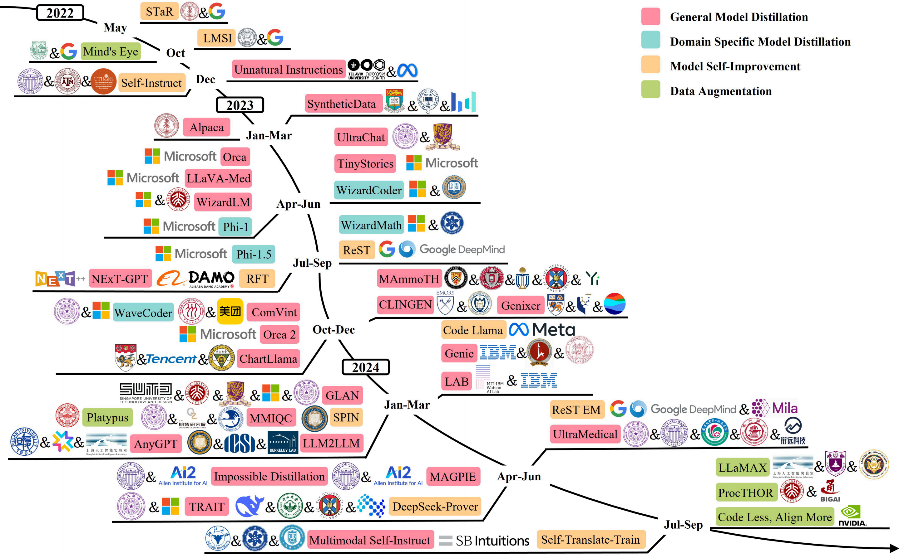
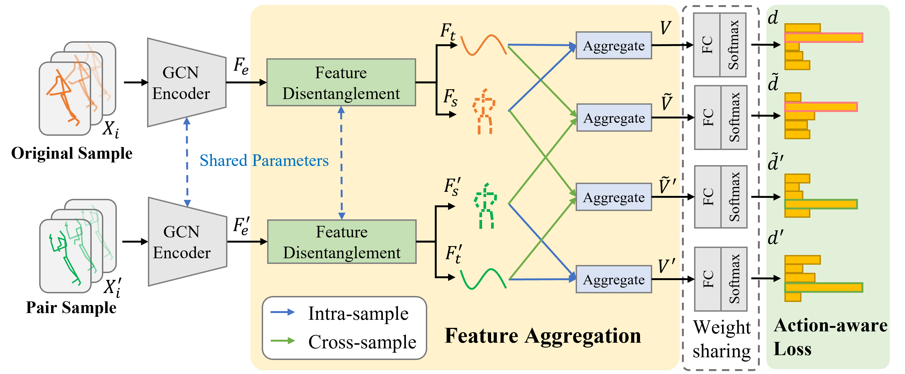
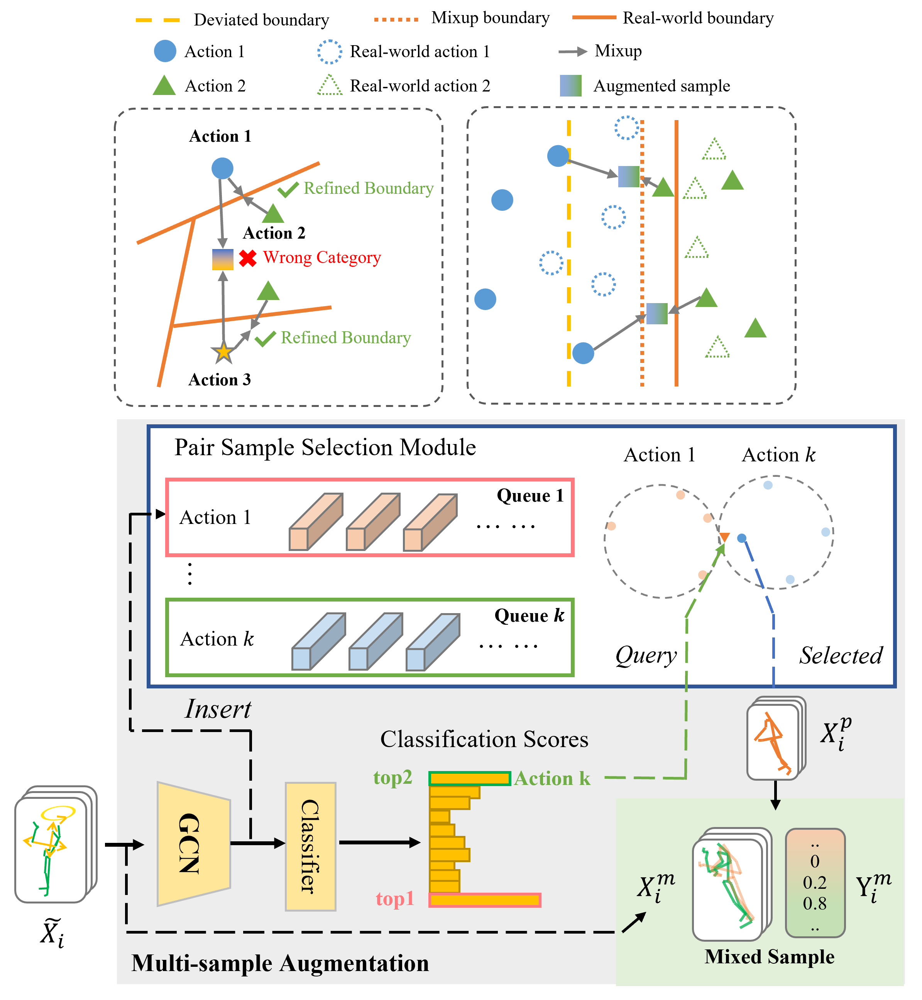

Research
Most of my work focuses on human-centric understanding and generation. Recently, I am exploring the integration of human-centric tasks with large language models (LLMs) to build more capable and interactive multimodal systems.
|
|
|
Towards Robust and Controllable Text-to-Motion via Masked Autoregressive Diffusion
Zongye Zhang,
Bohan Kong,
Qingjie Liu,
Yunhong Wang
ACM Multimedia, 2025
paper
Exploring generating human motions in continuous representations, which supports arbitrary motion key-frames as input for better user control and generalizability. To achieve generation on continuous space, this paper employs masked autoregressive diffusion for generation.
|
|

|
A Survey on Data Synthesis and Augmentation for Large Language Models
Ke Wang,
Jiahui Zhu,
Minjie Ren,
Zeming Liu,
Shiwei Li,
Zongye Zhang,
Chenkai Zhang,
Xiaoyu Wu,
Qiqi Zhan,
Qingjie Liu,
Yunhong Wang
ArXiv, 2024
paper
This paper reviews and summarizes data generation techniques throughout the lifecycle of LLMs, including data preparation, pre-training, fine-tuning, instruction-tuning, preference alignment, and applications.
|
|

|
SkeletonX: Data-Efficient Skeleton-based Action Recognition via Cross-sample Feature Aggregation
Zongye Zhang,
Wenrui Cai,
Qingjie Liu,
Yunhong Wang
IEEE Transaction on Multimedia (TMM), 2025
arXiv
/
code
|
|

|
SkeletonMix: A Mixup-Based Data Augmentation Framework for Skeleton-Based Action Recognition
Zongye Zhang,
Huanyu Zhou,
Qingjie Liu,
Yunhong Wang
IEEE ICASSP, 2025
paper
By selecting samples for mixup, the proposed method reduces the number of samples needed for training for existing GCN-based skeleton action recognition models.
|
Academic Service
Reviewer: IEEE Transaction on Circuits and Systems for Video Technology
|